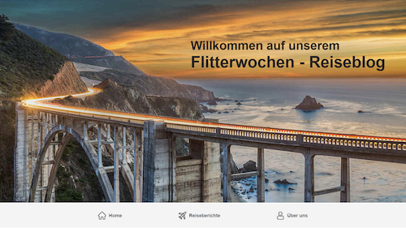
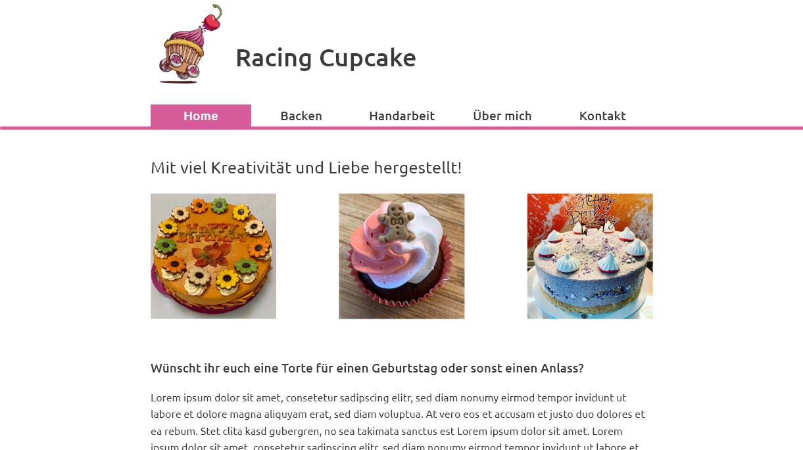

Referenzprojekte

mimiundremo.ch
Bei dieser Website handelt es sich um ein eigenes Projekt. Dabei zeigen Remo und Michèle Fischer einen Einblick in ihre Flitterwochen. Freunde und Familie hatten durch diesen Blog die Möglichkeit immer aktuell mitzulesen, was die beiden während ihrer Reise erlebt hatten.
Zum Projektdossier

racingcupcake.ch
Bei Racing Cupcake handelt es sich um eine Website einer Hobbybäckerin. Mit der eigenen Website kann sie ihre Backwerke präsentieren und Kunden haben zudem die Möglichkeit sie zu kontaktieren und Torten, Cupcakes usw. bei ihr zu bestellen.
Zum Projektdossier